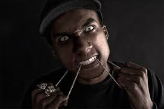
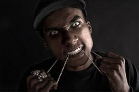

Proclamations that a certain era is "good" or "bad" for music are always specious. There's both good and bad music being made all the time, of course, in all different genres, and that's been true even during eras accepted as either "golden" or "dead" for whatever style you might be talking about. What's easier to talk about, what I think people are actually assessing when they talk in this way, is what's popular at a certain time in history—stylistic characteristics of the music that happens to be selling the most, or being played on popular radio stations. Of course, people often disagree about stylistic characteristics, too, whether they make for good or bad music. Different ears hear differently. Even among people as susceptible to group-think as music critics—who all proclaimed, every single last one of them, that Kanye West's My Beautiful Dark Twisted Fantasy was a straight-A, five-star, 10.0 masterpiece and the undisputed, inarguable, scientifically proven 100 percent guaranteed best album of 2010, objectively speaking. That said, objectively speaking, this, right now, is a really good time for rap music. What's popular, I mean. Except Drake. Kanye's album probably has something to do with it. It was a work of great artistic ambition, and the fact that it succeeded as it did was bound to have a positive effect. More than Kanye, though, I'd give credit to Lil Wayne and Gucci Mane for leading the way to a point where, as G from the underground-championing site Grand Good put it: "We should celebrate the fact that Jay Electronica and Tyler, The Creator can comfortably co-exist in that misty plane of rap popularity. And our freedom to consume and process and react to both, the adult and the child, without feeling compromised. Or something like that." Jay Electronica is the deep-thinking New Orleans rapper who Jay-Z signed to his Roc Nation label in November. He's older for an up-and-comer, 34, and has been working for years below the mainstream radar. And you probably read about Tyler the Creator recently. (He's the 19-year-old member of the L.A. collective Odd Future, who made a huge splash with their performance on Jimmy Fallon's show two weeks ago.) They're both really good. What's more important, they're both proudly, defiantly, weird. Here's another Odd Future video, this one for a song rapped by Tyler's colleague Earl Sweatshirt. It's excellent, but a warning: this video has lots of blood and gore. I find some of it extremely unpleasant to watch. You may want to close your eyes.
 
